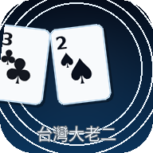

最近房號
尚無最近房號。

台灣大老二 正在準備牌桌…Big2 TW
v0.8.0 PWA 正式公開版｜免 Cloud Functions
v0.8.0 可安裝到手機桌面，支援離線開啟單人遊戲、新版更新提示與首次使用導覽。
v0.8.0 強化 Android、iPhone、平板與桌機回歸配置，使用動態視窗高度與安全區，並改善手牌滑動、斷線提示與 Firebase 效能。
可從瀏覽器安裝到手機或電腦桌面，以獨立視窗開啟；首頁與單人牌局資源可離線載入，多人功能仍需要網路。
單人重新開局會立即套用；多人房間會在「開始多人遊戲 / 下一局」時套用房主目前設定。
v0.8.0 正式上線實測修正版：免 Cloud Functions、不需要 Blaze；建立房間、加入房間、補 AI 與多人同步皆走 Firestore 休閒版流程。
尚未連線房間。若從邀請連結進入，系統會在 Firebase 初始化後自動加入；房主可開始多人遊戲。
房主可在等待中或本局結束時重新安排座位；牌局中踢除玩家會改由 AI 接管到本局結束。
可快速回到最近玩過的房間，也可刷新 Firestore 最近房間列表。若 Rules 不允許列表讀取，仍可用最近房號加入。
用來確認 v0.8.0 免 Cloud Functions 版是否可用：只需要 Firebase Config、匿名登入、Firestore Rules，不需要 functions/ 與 Blaze。
尚未執行檢查。
啟動後會先檢查 src/firebase-config.js 是否已填入。
按「執行 Firebase 檢查」後確認。
會建立並刪除暫存房間，確認 Rules 是否仍支援 v0.8.0。
v0.8.0 不需要 functions/，也不需要 Blaze。
回報問題時可按「複製偵錯資訊」，會包含房號、座位、回合、上一手、revision、玩家列表與最近歷史。
AI 會依照難度選擇出牌策略。
深色模式：黑底高對比。
可分別關閉選牌、出牌、Pass、發牌、勝利、錯誤提示音；手機覺得閃動太多時可關閉動畫。
第一手依規則設定決定起手牌。
手機可左右滑動手牌；牌桌會緊鄰手牌，選中的牌會明顯上浮。
請選擇手牌後出牌。
系統會即時提示目前牌型是否可出。
第一手依規則設定決定起手牌。輪到你領出時不能 Pass。
顯示目前房間累計總分；單人模式會顯示本機最近一局統計。
本機保存個人戰績，不會上傳私人資料；更換瀏覽器或清除資料後會重新計算。
保留最近 40 局本機紀錄，可用來回顧排名與分數。
第一次玩大老二的朋友，可以照下面順序看；正式規則仍以「正式規則與計分設定」為準。
可出單張、對子、三條，以及五張牌型：順子、同花、葫蘆、鐵支、同花順。四張牌不能單獨出，鐵支在本遊戲中是四張相同點數加一張雜牌的五張牌型。
台灣常用規則為梅花 3 起手，第一手必須包含梅花 3；也可在設定中改成方塊 3 起手或朋友局變體。
必須出相同張數與相同類型的牌，或用更大的五張牌型壓過上一手。單張、對子、三條比較點數與花色；五張牌型依順子 < 同花 < 葫蘆 < 鐵支 < 同花順。
你是領出者時不能 Pass；若上一手壓不過或想保留牌，可以 Pass。其他三家都 Pass 後，最後成功出牌的人取得下一輪領出權。
房主建立房間後複製邀請連結或顯示 QR Code。朋友開啟連結會自動帶入房號並嘗試加入；若是密碼房，請先輸入密碼再加入。
快速查詢目前大老二常用規則；實際起手牌與順子設定仍以「正式規則與計分設定」為準。
可出單張、對子、三條，以及五張牌型：順子、同花、葫蘆、鐵支、同花順。出牌時必須與上一手張數和牌型相同，或以更大的同類牌壓過上一手；五張牌型依設定比較大小。
輪到你時可以出牌或 Pass；若你是新一輪領出者，不能 Pass。其他三家都 Pass 後，最後成功出牌的玩家取得下一輪領出權。
一位玩家出完手牌後本局結束，輸家依剩餘張數扣分，贏家取得所有扣分總和。排行榜會以同一房間的累計總分、勝場與局數排序。
提醒：這版是 GitHub Pages + Firestore 朋友休閒版，不需要 Blaze。若未來要嚴格防作弊，才需要另行升級 Cloud Functions。
上傳 GitHub Pages 前請逐項確認。完整清單請看 docs/PWA_RELEASE_CHECKLIST.md。